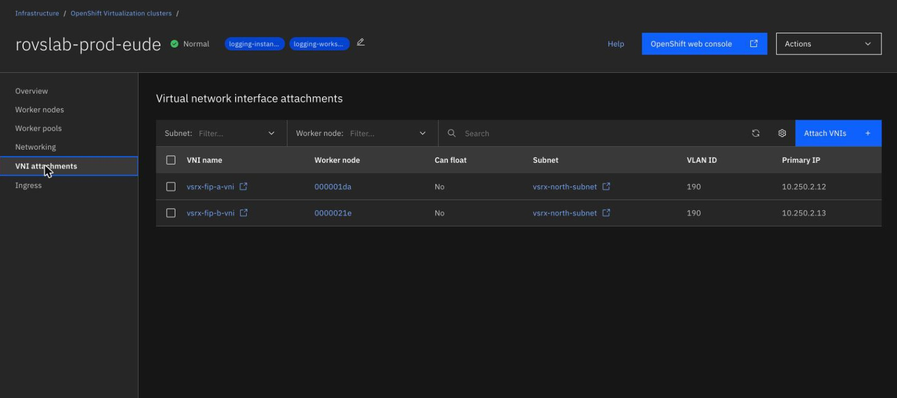
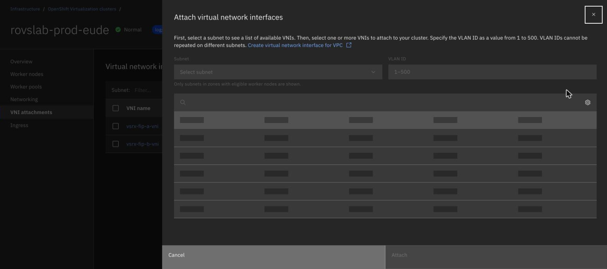
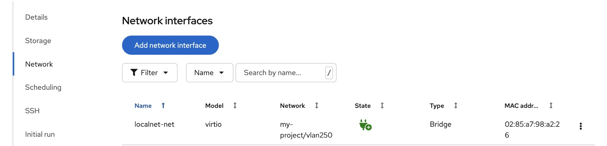

Put a VM on a VPC subnet
By the end of this unit you'll be able to read a localnet network definition, say what has to match on the VPC side, and check that a VM really is on its subnet.
Northgate Freight is a made-up haulier that's moving off vSphere. The output and screens in this unit are real. Northgate's migrated VMs have to sit on VPC subnets with their own addresses.
Every statement, definition, screenshot and output in this unit comes from a real run on a lab cluster, apart from the review question. Some names are shortened to fit the page. The VMware comparison is a rough match of our own, and IBM doesn't describe it this way.
One localnet network, six parts
On a ROVS cluster IBM builds the bridge for you, and you write the network. Tap a part of the drawing to see what it does and which lines define it. You can also click a line.
Name
The network creates a network attachment definition with the same name in each matching project. A VM's interface refers to it as project/name.
Who can use it
A selector picks the projects. The network creates its attachment definition in each one, and only VMs in those projects can attach.
Type
Localnet is always secondary. VMs on it behave as if they're plugged straight into a VPC subnet.
From vSphere: it's like a VLAN-backed port group.
Watch for this. An ordinary pod can attach too, but it gets an interface with no address, so localnet is for VMs.
Physical network name
This has to match the localnet value in the bridge mapping, character for character. If it doesn't, the network can't find the bridge, and VM traffic never reaches the VPC.
Watch for this. Read the name off your cluster with oc get nncp. IBM builds the bridge and the mapping, and IBM hasn't promised what the names will be.
Address management
This is disabled, because the VPC manages the addresses and the network hands out nothing. The VM gets its address by DHCP with the VNI's MAC address, or from a static address set inside the guest.
VLAN
Access mode tags all traffic on this network with the ID. It has to be the same number as --vlan on the VNI attachment.
Watch for this. A wrong VLAN can still look as if it works, because VPC DHCP may answer. Test with traffic.
apiVersion: k8s.ovn.org/v1
kind: ClusterUserDefinedNetwork
metadata:
name: vlan250
spec:
namespaceSelector:
matchExpressions:
- key: kubernetes.io/metadata.name
operator: In
values: ["project-1"]
network:
topology: Localnet
localnet:
role: Secondary
physicalNetworkName: vpc-vlans
ipam:
mode: Disabled
vlan:
mode: Access
access:
id: 250
The physical network name is a value you read off your cluster. vpc-vlans is what the lab cluster returned.
Check the network, then the VM
Run each command in turn. The output is what the ROVS lab clusters returned.
oc get nncp
NAME STATUS REASON br-eth1 Available SuccessfullyConfigured vpc-vlans Available SuccessfullyConfigured
There are two policies, the bridge and the mapping.
The add-on created them. Read them, and don't re-apply them.
oc get nncp -o jsonpath='{range .items[*]}{range .spec.desiredState.ovn.bridge-mappings[*]}{.localnet}{" -> "}{.bridge}{"\n"}{end}{end}'
vpc-vlans -> br-eth1
The left side is your physicalNetworkName.
oc get clusteruserdefinednetwork vlan250 -o jsonpath='{range .status.conditions[*]}{.type}{" | "}{.status}{" | "}{.reason}{" | "}{.message}{"\n"}{end}'
NetworkCreated | True | NetworkAttachmentDefinitionCreated | NetworkAttachmentDefinition has been created in following namespaces: [project-1]
There's no STATUS column, so this condition is the ready signal.
The message lists the projects your selector matched.
oc get net-attach-def vlan250 -n project-1 -o jsonpath='{.spec.config}'
{"cniVersion":"1.1.0","mtu":9000,"name":"cluster_udn_vlan250",
"netAttachDefName":"project-1/vlan250","physicalNetworkName":"vpc-vlans",
"role":"secondary","topology":"localnet","type":"ovn-k8s-cni-overlay","vlanID":250}
This is the fastest way to check that the name and VLAN came out as you meant.
Don't edit it, because the network manages it.
ibmcloud ks vni ls --cluster-id $cluster_id
VNI ID Worker Node IP Address VLAN Floating Auto-delete 02d7-f6216add kube-...-default-0000021e 10.250.1.5 250 yes yes
This page shows only this row.
Floating yes means the attachment follows the VM to whichever worker runs it.
# inside the VM
ip -br addr
lo UNKNOWN 127.0.0.1/8 ::1/128 eth0 UP 10.250.1.5/24 fe80::f318:9f7c:3206:f658/64
The address in the guest is the address that was reserved.
The VM shows the right address. Is that proof that the path to the VPC works?
Show the answer
No. VPC DHCP may still answer when the VLAN IDs don't match, so an address on its own proves nothing. Ping the subnet gateway.
ip route
default via 10.250.1.1 dev eth0 proto static metric 100 10.250.1.0/24 dev eth0 proto kernel scope link src 10.250.1.5 metric 100
The default route points at the VPC subnet gateway.
ping -c 3 10.250.1.1
64 bytes from 10.250.1.1: icmp_seq=1 ttl=63 time=1.19 ms 64 bytes from 10.250.1.1: icmp_seq=2 ttl=63 time=0.212 ms --- 10.250.1.1 ping statistics --- 0% packet loss
The whole chain works, from the reserved IP to the VNI on the VLAN, the localnet network, the bridge interface and a route off the segment.
Attach the VNI, then see the VM's interface
These are real screens. Click where you'd click on the live console. After two misses, the page marks the right place.

In the IBM Cloud console, open the cluster. Which entry in its left menu lists the VNI attachments?
Show where
Right. VNI attachments. Click Attach VNIs at the top right to add one.

The list of VNIs is empty. What must you choose first?
Show where
Right. The Subnet. The panel then lists the VNIs available in it.
Which field has to hold the same number as the network's VLAN?
Show where
Right. VLAN ID, from 1 to 500. The panel says that VLAN IDs can't be repeated on different subnets. IBM's localnet page narrows the range to 2 to 500.

On the VM's own Network tab, which column shows the localnet network it's on?
Show where
Right. The Network column reads my-project/vlan250, which is the project and the name of the network. The Type is Bridge.
Two choices that decide whether it works
A Northgate VM may live-migrate to another worker in the same zone. How should its VNI be attached?
Show the answer
Floating. A floating attachment is scoped to the cluster, so the VNI follows the VM between workers in the same zone. With a pinned attachment the VM loses the VNI if it moves. Neither kind moves between zones.
Spot the fault. The VM boots and has its reserved address, but the ping to the subnet gateway shows 100% loss. Its security group was just created. What's the likely cause?
Show the answer
Listing rules of security group my-vm-sg ... No rules were found.
The group has no rules. A new security group starts empty, and an empty group denies all traffic in both directions. Once we added inbound ICMP and outbound any, the VM went from 100% loss to a working ping. The SSH rule is for reaching the guest, and ping doesn't need it.
Three questions
Review question from Unit 2.4. You restart a Linux VM. Which cloud-init section runs again?
Show the answer
bootcmd. It runs on every boot. The rest of cloud-init runs on first boot only, and runcmd runs once. For the static address on a localnet VM, the worked example uses runcmd, because nmcli connection add isn't safe to repeat. Each reboot would add another profile with the same name.
On localnet, which interface mode does the VM's network card use?
Show the answer
Bridge. Bridge mode connects the virtual NIC directly to the external network, so its traffic appears on the VLAN without NAT. Localnet needs it, because the VM has to appear on the VPC subnet as itself.
A reserved IP was created on its own, then the VNI that used it was detached with --auto-delete. What happened to the reserved IP?
Show the answer
It stays allocated. --auto-delete on the attachment covers only the VNI. A reserved IP created on its own has its own setting, which is false. Create it inline with --rip-auto-delete true to release it with the VNI, or delete it as the last cleanup step.
You can put a VM on a VPC subnet
The name has to match the bridge mapping, and the VLAN has to match the attachment. Attach the VNI floating if the VM will move. An empty security group drops everything.
Tutorial chapter 31, Connect a ROVS VM to a VPC subnet with a localnet network, builds this end to end.